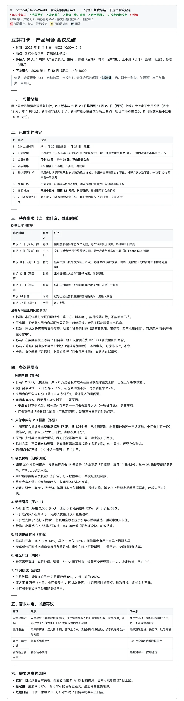
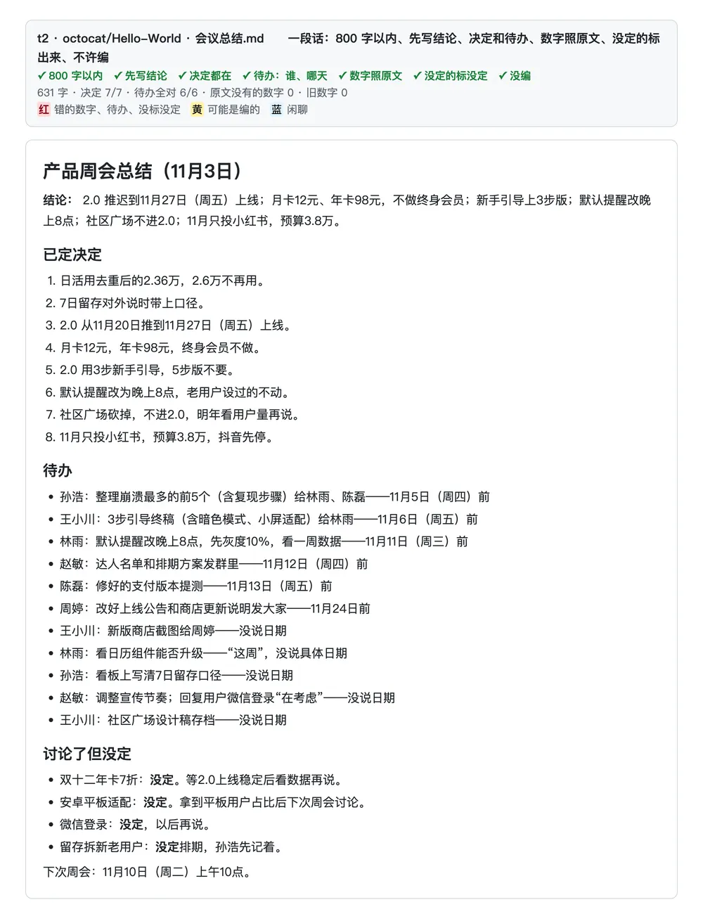

Control: Claude Code with nothing installed: meeting summary test
Test of 2026-11-08. Installed from its README in a throwaway sandbox, then used by Claude Code (Claude Opus 5.5) to summarise the same made-up meeting record, an automatic transcript of a product team's weekly meeting of about 5,000 字, from two requests in the person's words. Whenever the build stopped short of a finished summary, it got the same reply. A separate tester session, with no tool loaded, checked the summary against 7 checks fixed before the runs: six scripted against an answer key written with the record, and one, anything the record does not support, read by the tester sentence by sentence. Everything in the record is made up. All results · The meeting record · The checklist · The answer key
One line
The request, word for word: 「帮我总结一下这个会议记录。」
5 of 7 checks passed. 2,282 字, in 会议纪要总结.md. Built in 0.8 minutes; it stopped to ask 0 time(s); how it ended: finished. Usage at API prices: $0.23 (1.0 times the run with no tool on this request).
| Check | Verdict | What decided it |
|---|---|---|
| At most 800 字 | fail | 2282 字（上限 800） |
| Opens with what was decided | pass | 开头 150 字里写到 6 条决定（D1、D2、D4、D5、D6、D7）；开头：因上周会员续费出现重复扣款，2.0 版本从 11 月 20 日推迟到 11 月 27 日（周五）上线；会上定了会员价格（月卡 12 元、年卡 98 元）、新手引导改为 3 步、新用户默认提醒改为晚上 8 点、社区广场不进 2.0、11 月… |
| All 7 decisions | pass | 7/7 条决定写到了 |
| All 6 tasks, each with its owner and due date | pass | 6/6 条待办负责人和截止日期都对 |
| Every figure as the record says it | pass | 113 个数字，0 个原文里没有；旧数字当成现在的 0 处 |
| The 3 open points marked not decided | pass | 3/3 件没定的事写到并标了没定 |
| Nothing the record does not support (the tester) | fail | 2 statement(s) the record does not support, listed below |
What the tester found the record does not support
| 11 月 27 日（周五） | 全员 | 2.0 上线 |
Listed as an action item with owner 全员. The record only has the decision to move the launch to 11 月 27 日; nobody was given a task of that name, and no owner 全员 was named.**支付**：自动续费目前关着，修复必须在 11 月 13 日前提测，否则可能影响 27 日上线。
The record gives 陈磊 the 11 月 13 日 deadline for testing, but nobody says that missing it would affect the 27 日 launch. The summary adds that consequence itself.
Small talk it kept: 咖啡机
The tester's notes
Markdown in Chinese with clean tables; names are spelt correctly. Very long (2282 字): besides the decisions and tasks it has full per-topic notes, a risks section, and a fourth open item (留存拆分新老用户) that the record treats as a loose ask, not an open point. The decision table has 8 rows; rows 2 (日活口径) and 8 (7 日留存口径) are on top of the 7 key decisions, and both are supported by the record.
The summary with the script's marks
The picture shown in our video. Red: a figure the record does not say, an old figure given as current, a task with the wrong owner or date, an open point not marked open. Yellow: lines the script flagged for the tester to read (candidates, not verdicts; the tester's list above is the verdict). Blue: small talk.

The summary as delivered (会议纪要总结.md)
# 豆芽打卡 · 产品周会 会议总结 - **时间**：2026 年 11 月 3 日（周二）10:00–10:16 - **地点**：3 楼小会议室（赵敏线上参加） - **参会人（6 人）**：周婷（产品负责人，主持）、陈磊（后端）、林雨（客户端）、王小川（设计）、赵敏（运营）、孙浩（测试） - **下次周会**：2026 年 11 月 10 日（周二）上午 10:00 > 依据：`会议记录.txt`（自动转写，未校对）。会前会后的闲聊（咖啡机、猫、双十一购物、午饭等）与工作无关，未列入。 --- ## 一、一句话总结 因上周会员续费出现重复扣款，**2.0 版本从 11 月 20 日推迟到 11 月 27 日（周五）上线**；会上定了会员价格（月卡 12 元、年卡 98 元）、新手引导改为 3 步、新用户默认提醒改为晚上 8 点、社区广场不进 2.0、11 月投放只投小红书（3.8 万元）。 --- ## 二、已做出的决定 | # | 事项 | 决定 | |---|------|------| | 1 | 2.0 上线时间 | 从 11 月 20 日推迟到 **11 月 27 日（周五）** | | 2 | 日活数据 | 上周说的 2.6 万有误（安卓部分用户重复统计），**统一使用去重后的 2.36 万**，对内对外都不再用 2.6 万 | | 3 | 会员价格 | **月卡 12 元，年卡 98 元，不做终身会员** | | 4 | 新手引导 | **2.0 直接上 3 步版**，5 步版不再使用 | | 5 | 默认提醒时间 | 新用户默认提醒**从早上 9 点改为晚上 8 点**；老用户自己设置过的不改；推送文案这次不改；先灰度 10% 用户看一周数据 | | 6 | 社区广场 | **不进 2.0**（只读精选页也不做），明年视用户量再说；设计稿存档保留 | | 7 | 11 月投放 | **只投小红书，预算 3.8 万元，抖音暂停**；素材里不放会员价格 | | 8 | 7 日留存对外口径 | 对外说 7 日留存时要注明口径（我们算的是"7 天内任意一天回来过"） | --- ## 三、待办事项（谁、做什么、截止时间） 按截止时间排序： | 截止时间 | 负责人 | 任务 | |----------|--------|------| | 11 月 5 日（周四）前 | 孙浩 | 整理崩溃最多的前 5 个问题，每个写清复现步骤，交给林雨和陈磊 | | 11 月 6 日（周五）前 | 王小川 | 交付 3 步新手引导终稿给林雨，需包含暗色模式和小屏（如 iPhone SE）适配 | | 11 月 11 日（周三）前 | 林雨 | 新用户默认提醒改为晚上 8 点，先给 10% 用户灰度，观察一周数据（同时留意安卓推送到达率） | | 11 月 12 日（周四）前 | 赵敏 | 出小红书达人名单和排期方案，发到群里 | | 11 月 13 日（周五）前 | 陈磊 | 修好支付问题（回调加幂等校验 + 每日对账）并提测 | | 11 月 24 日前 | 周婷 | 改好上线公告和应用商店更新说明，发给大家看 | | 11 月 27 日（周五） | 全员 | 2.0 上线 | **没有写明截止时间的事项：** - 林雨：本周查看打卡页日历组件（第三方、版本老），能升级就升级，不能就自己改。 - 王小川：把新版应用商店截图连同公告一起给周婷；会员主题皮肤需多出几套。 - 赵敏：按 2.0 推迟调整宣传节奏；给博主准备素材包（新界面截图、图标等，和王小川对接）；回复用户"微信登录在考虑中"。 - 孙浩：在数据看板上写清 7 日留存口径；支付需在安卓和 iOS 各完整回归两轮。 - 孙浩 / 陈磊：留存按新老用户拆分（需陈磊加字段），本周事多，可能排不上，不急。 - 全员：有空看看「习惯熊」上周的改版（打卡日历视图），有想法在群里说。 --- ## 四、各议题要点 ### 1. 数据回顾（孙浩） - 日活：**2.36 万**（更正后，原 2.6 万是老版本埋点在后台唤醒时重复上报，已在上个版本修复）。 - 次日留存 41%，7 日留存 23.5%，与前两周差不多；付费转化率 2.7%。 - 应用商店评分 4.6 分（共 1,284 条评价），差评最多的是**闪退**。 - 崩溃率 **0.8%**，目标是 0.3% 以下。主要原因： - 安卓 9 以下老机型，部分是内存不足——打卡分享图太大（一张好几兆），需要压缩； - 打卡页连续切换日期会崩溃（可稳定复现），是第三方日历组件的问题。 ### 2. 支付事故与 2.0 排期（陈磊） - 上周三晚会员续费出现**重复扣款 37 笔，共 1,036 元**，已全部退款，赵敏和孙浩逐一电话道歉。小红书上有一条吐槽笔记，用户后来已改为"已退款，客服态度还行"。 - 原因：支付渠道回调会重试，我方没做幂等处理，同一请求被扣了两次。 - 临时方案：**已关闭自动续费**。彻底修复需加幂等校验 + 每日对账，约一周多，还要充分测试。 - 因测试时间不够，2.0 推迟一周到 11 月 27 日。 ### 3. 会员价格（赵敏调研） - 调研 300 多位老用户：多数觉得月卡 15 元偏贵（会拿竞品「习惯熊」每月 10 元比较）；年卡 98 元接受度明显更高，128 元几乎没人选。 - 用户最想要的会员权益：去广告、打卡数据导出，其次是主题皮肤。 - 终身会员不做：没有续费收入，长期服务成本不好算。 - **未定**：双十二年卡 7 折活动。陈磊担心支付刚出事、系统未稳。等 2.0 上线稳定后看数据再定，赵敏先不对外说。 ### 4. 新手引导（王小川） - A/B 测试（每组 2,000 多人）：现行 5 步版完成率 **52%**，新 3 步版 **68%**。 - 5 步版很多人在第 4 步（选每天提醒几次）直接退出。 - 3 步版去掉了"选打卡模板"，首页用空状态提示引导从模板挑选，测试中没人卡住。 - 待修：小屏手机上底部按钮被挡一半；暗色模式配色还没做。动效从简。 ### 5. 推送提醒时间（林雨） - 推送打开率：晚上 8 点 **14%**，早上 9 点仅 **8.5%**；问卷里也有用户嫌早上提醒太早。 - 安卓部分厂商推送通道有每日条数限制，集中在晚上可能延迟——量不大，灰度时盯到达率。 ### 6. 社区广场（周婷） - 社区需要审核、举报处理、运营，6 个人顾不过来，运营至少还要再加一人。决定砍掉，不进 2.0。 ### 7. 11 月投放（赵敏） - 9 月数据：抖音来的用户 7 日留存仅 **9%**，小红书来的 **26%**。 - 原方案 5 万元（抖音、小红书各半），因 2.0 推迟、11 月可投时间变短，改为只投小红书 3.8 万元。 - 小红书主要找学习类和健身类博主。 --- ## 五、暂未决定、以后再议 | 事项 | 现状 | 下一步 | |------|------|--------| | 安卓平板适配 | 安卓平板上界面被拉伸变形，评论每周都有人提；需重新排版、考虑横屏，测试还没有平板设备；iPad 也是放大的手机界面 | 林雨先不动；拿到平板用户占比后，下次周会再讨论 | | 微信登录 | 用户呼声多；接入约 2 周，赶不上 2.0；涉及账号体系改动、换手机账号合并等问题 | 周婷还没想好，先记下，以后再说 | | 双十二年卡 7 折 | 担心系统稳定性 | 2.0 上线稳定后看数据再定 | | 留存拆分新老用户 | 看板暂不支持 | 需要加字段，排期待定 | --- ## 六、需要注意的风险 - **支付**：自动续费目前关着，修复必须在 11 月 13 日前提测，否则可能影响 27 日上线。 - **稳定性**：崩溃率 0.8%，离 0.3% 的目标差距大，是差评的主要来源。 - **数据口径**：日活一律用 2.36 万；对外说 7 日留存时要带上口径。
Where it stopped, and got the reply 「我不懂这些，你按你推荐的来，继续做。」
- It did not stop to ask.
One paragraph
The request, word for word: 「帮我把这个会议记录整理成一份总结，发给没来开会的同事看。全文 800 字以内。第一段先写结论：这次会最后定了什么。然后列出所有拍板的决定，再列出所有待办，每一条写清楚谁负责、哪天之前做完。数字一律照原文写，不要改，也不要自己换算。讨论了但没定下来的事单独列出来，标明“没定”，不能写成已经定了。原文里没有的东西一个字都别编，包括负责人和截止日期。」
7 of 7 checks passed. 631 字, in 会议总结.md. Built in 1.5 minutes; it stopped to ask 0 time(s); how it ended: finished. Usage at API prices: $0.27 (1.0 times the run with no tool on this request).
| Check | Verdict | What decided it |
|---|---|---|
| At most 800 字 | pass | 631 字（上限 800） |
| Opens with what was decided | pass | 开头 150 字里写到 7 条决定（D1、D2、D3、D4、D5、D6、D7）；开头：结论： 2.0 推迟到11月27日（周五）上线；月卡12元、年卡98元，不做终身会员；新手引导上3步版；默认提醒改晚上8点；社区广场不进2.0；11月只投小红书，预算3.8万。 |
| All 7 decisions | pass | 7/7 条决定写到了 |
| All 6 tasks, each with its owner and due date | pass | 6/6 条待办负责人和截止日期都对 |
| Every figure as the record says it | pass | 41 个数字，0 个原文里没有；旧数字当成现在的 0 处 |
| The 3 open points marked not decided | pass | 3/3 件没定的事写到并标了没定 |
| Nothing the record does not support (the tester) | pass | None found |
What the tester found the record does not support
- Nothing.
The tester's notes
Single Markdown file, Chinese, clean layout: bold conclusion line, numbered decisions (8, since it splits out the 日活 correction and the 7日留存 口径 note as decisions, both of which the record supports), a 待办 list (6 dated tasks followed by 5 loose asks marked 没说日期), a 没定 section with 4 items (adds 留存拆新老用户, which is accurate), and the next meeting's date. No small talk kept. Names all spelt correctly. Someone reading it might take the 5 undated loose asks under 待办 for formal tasks, but each one is labelled as having no date.
The summary with the script's marks
The picture shown in our video. Red: a figure the record does not say, an old figure given as current, a task with the wrong owner or date, an open point not marked open. Yellow: lines the script flagged for the tester to read (candidates, not verdicts; the tester's list above is the verdict). Blue: small talk.

The summary as delivered (会议总结.md)
# 产品周会总结（11月3日） **结论：** 2.0 推迟到11月27日（周五）上线；月卡12元、年卡98元，不做终身会员；新手引导上3步版；默认提醒改晚上8点；社区广场不进2.0；11月只投小红书，预算3.8万。 ## 已定决定 1. 日活用去重后的2.36万，2.6万不再用。 2. 7日留存对外说时带上口径。 3. 2.0 从11月20日推到11月27日（周五）上线。 4. 月卡12元，年卡98元，终身会员不做。 5. 2.0 用3步新手引导，5步版不要。 6. 默认提醒改为晚上8点，老用户设过的不动。 7. 社区广场砍掉，不进2.0，明年看用户量再说。 8. 11月只投小红书，预算3.8万，抖音先停。 ## 待办 - 孙浩：整理崩溃最多的前5个（含复现步骤）给林雨、陈磊——11月5日（周四）前 - 王小川：3步引导终稿（含暗色模式、小屏适配）给林雨——11月6日（周五）前 - 林雨：默认提醒改晚上8点，先灰度10%，看一周数据——11月11日（周三）前 - 赵敏：达人名单和排期方案发群里——11月12日（周四）前 - 陈磊：修好的支付版本提测——11月13日（周五）前 - 周婷：改好上线公告和商店更新说明发大家——11月24日前 - 王小川：新版商店截图给周婷——没说日期 - 林雨：看日历组件能否升级——“这周”，没说具体日期 - 孙浩：看板上写清7日留存口径——没说日期 - 赵敏：调整宣传节奏；回复用户微信登录“在考虑”——没说日期 - 王小川：社区广场设计稿存档——没说日期 ## 讨论了但没定 - 双十二年卡7折：**没定**。等2.0上线稳定后看数据再说。 - 安卓平板适配：**没定**。拿到平板用户占比后下次周会讨论。 - 微信登录：**没定**，以后再说。 - 留存拆新老用户：**没定**排期，孙浩先记着。 下次周会：11月10日（周二）上午10点。
Where it stopped, and got the reply 「我不懂这些，你按你推荐的来，继续做。」
- It did not stop to ask.